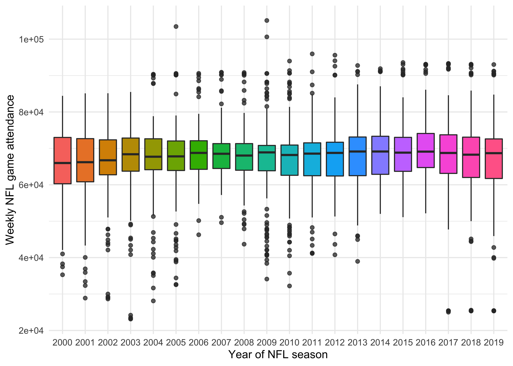
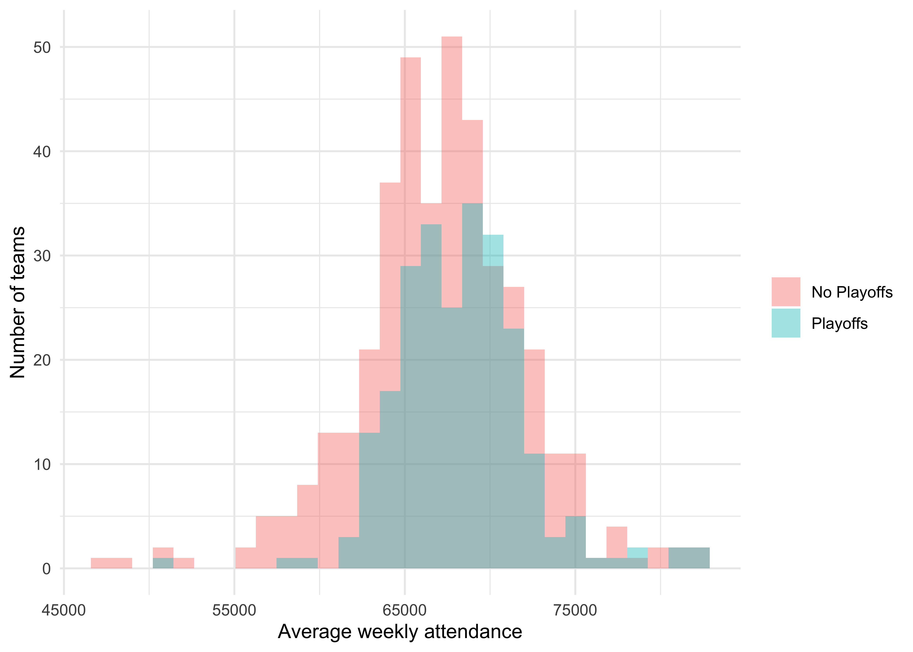
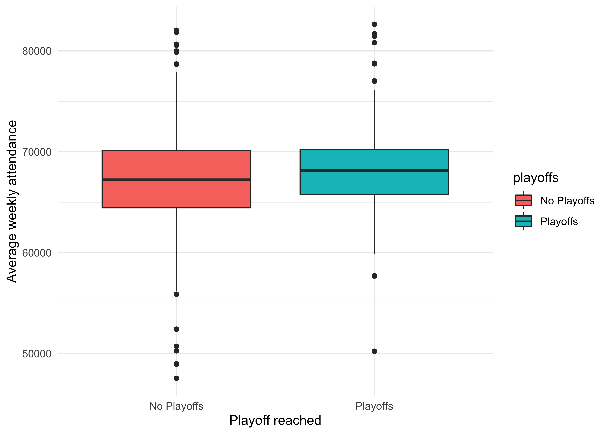
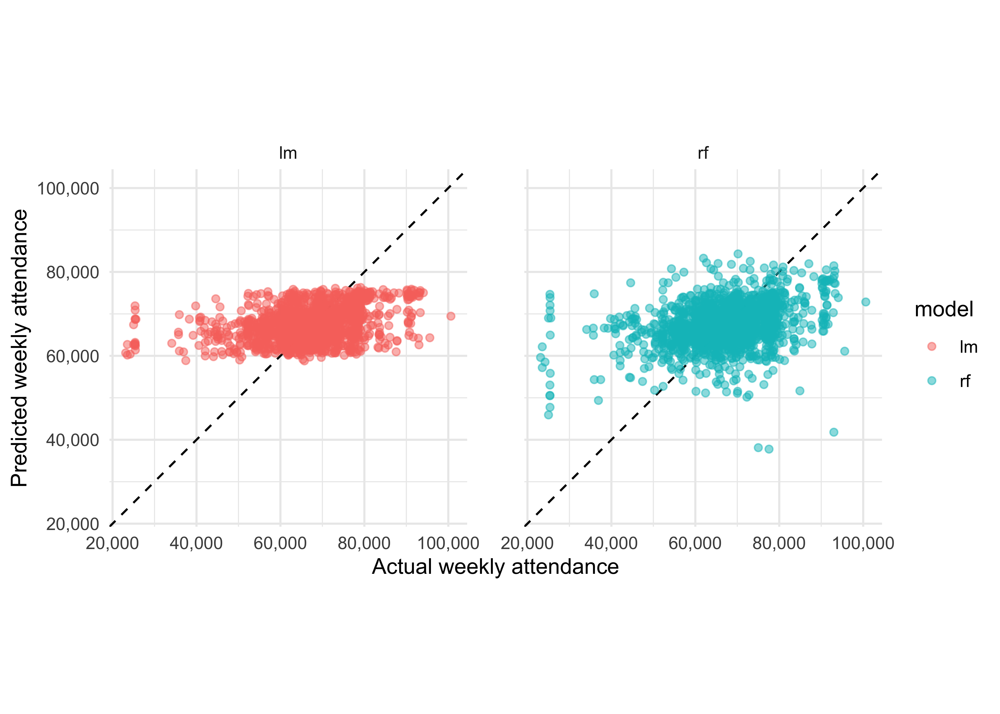

In this post I’m going to be trying out the new tidymodels framework in R.
I’ve been reading through the corresponding book and it looks to me like a real game-changer for building robust statistical/ML models quickly in the R language. But reading only gets you so far! Time to test it out.
The data I’m going to be using is a #TidyTuesday dataset from last year related to crowd attendances in the American national football league (NFL).
The tidymodels framework covers all stages of the modeling lifecyle, from data preprocessing and resampling to model building, tuning and evaluation. In this post I’m only going to look at data resampling and model building and evaluation. I’ll look at the other stages in future posts.
I owe credit to Julia Silge, whose blog post served as the inspiration for this piece.
attendance <- read_csv("https://raw.githubusercontent.com/rfordatascience/tidytuesday/master/data/2020/2020-02-04/attendance.csv")
results <- read_csv("https://raw.githubusercontent.com/rfordatascience/tidytuesday/master/data/2020/2020-02-04/standings.csv")Our first dataset is about attendance per team every week since the year 2000:
head(attendance)## # A tibble: 6 x 8
## team team_name year total home away week weekly_attendance
## <chr> <chr> <dbl> <dbl> <dbl> <dbl> <dbl> <dbl>
## 1 Arizona Cardinals 2000 893926 387475 506451 1 77434
## 2 Arizona Cardinals 2000 893926 387475 506451 2 66009
## 3 Arizona Cardinals 2000 893926 387475 506451 3 NA
## 4 Arizona Cardinals 2000 893926 387475 506451 4 71801
## 5 Arizona Cardinals 2000 893926 387475 506451 5 66985
## 6 Arizona Cardinals 2000 893926 387475 506451 6 44296And our second dataset gives us results stats for each team about things like final standings, wins/losses, points for/against and whether the team made the playoffs for every year since 2000.
head(results) ## # A tibble: 6 x 15
## team team_name year wins loss points_for points_against points_differen…
## <chr> <chr> <dbl> <dbl> <dbl> <dbl> <dbl> <dbl>
## 1 Miami Dolphins 2000 11 5 323 226 97
## 2 Indian… Colts 2000 10 6 429 326 103
## 3 New Yo… Jets 2000 9 7 321 321 0
## 4 Buffalo Bills 2000 8 8 315 350 -35
## 5 New En… Patriots 2000 5 11 276 338 -62
## 6 Tennes… Titans 2000 13 3 346 191 155
## # … with 7 more variables: margin_of_victory <dbl>, strength_of_schedule <dbl>,
## # simple_rating <dbl>, offensive_ranking <dbl>, defensive_ranking <dbl>,
## # playoffs <chr>, sb_winner <chr>Let’s join these datasets by team and year to get one large dataset combining data on results and attendances which we can use for modelling.
attendance_joined <- attendance %>%
left_join(results,
by = c("year", "team_name", "team")
)
head(attendance_joined)## # A tibble: 6 x 20
## team team_name year total home away week weekly_attendan… wins loss
## <chr> <chr> <dbl> <dbl> <dbl> <dbl> <dbl> <dbl> <dbl> <dbl>
## 1 Arizo… Cardinals 2000 893926 387475 506451 1 77434 3 13
## 2 Arizo… Cardinals 2000 893926 387475 506451 2 66009 3 13
## 3 Arizo… Cardinals 2000 893926 387475 506451 3 NA 3 13
## 4 Arizo… Cardinals 2000 893926 387475 506451 4 71801 3 13
## 5 Arizo… Cardinals 2000 893926 387475 506451 5 66985 3 13
## 6 Arizo… Cardinals 2000 893926 387475 506451 6 44296 3 13
## # … with 10 more variables: points_for <dbl>, points_against <dbl>,
## # points_differential <dbl>, margin_of_victory <dbl>,
## # strength_of_schedule <dbl>, simple_rating <dbl>, offensive_ranking <dbl>,
## # defensive_ranking <dbl>, playoffs <chr>, sb_winner <chr>As usual, we need to look at our data first to get a sense of it before starting any modelling. I like to do this using the skim function from R’s skimr package, which gives us an overview of the data:
skimr::skim(attendance_joined)| Name | attendance_joined |
| Number of rows | 10846 |
| Number of columns | 20 |
| _______________________ | |
| Column type frequency: | |
| character | 4 |
| numeric | 16 |
| ________________________ | |
| Group variables | None |
Variable type: character
| skim_variable | n_missing | complete_rate | min | max | empty | n_unique | whitespace |
|---|---|---|---|---|---|---|---|
| team | 0 | 1 | 5 | 13 | 0 | 32 | 0 |
| team_name | 0 | 1 | 4 | 10 | 0 | 32 | 0 |
| playoffs | 0 | 1 | 8 | 11 | 0 | 2 | 0 |
| sb_winner | 0 | 1 | 12 | 13 | 0 | 2 | 0 |
Variable type: numeric
| skim_variable | n_missing | complete_rate | mean | sd | p0 | p25 | p50 | p75 | p100 | hist |
|---|---|---|---|---|---|---|---|---|---|---|
| year | 0 | 1.00 | 2009.53 | 5.75 | 2000.0 | 2005.0 | 2010.0 | 2015.00 | 2019.0 | ▇▇▇▇▇ |
| total | 0 | 1.00 | 1080910.03 | 72876.97 | 760644.0 | 1040509.0 | 1081089.5 | 1123230.00 | 1322087.0 | ▁▁▇▆▁ |
| home | 0 | 1.00 | 540455.01 | 66774.65 | 202687.0 | 504360.0 | 543185.0 | 578342.00 | 741775.0 | ▁▁▅▇▁ |
| away | 0 | 1.00 | 540455.01 | 25509.33 | 450295.0 | 524974.0 | 541757.0 | 557741.00 | 601655.0 | ▁▂▇▇▂ |
| week | 0 | 1.00 | 9.00 | 4.90 | 1.0 | 5.0 | 9.0 | 13.00 | 17.0 | ▇▆▆▆▇ |
| weekly_attendance | 638 | 0.94 | 67556.88 | 9022.02 | 23127.0 | 63245.5 | 68334.0 | 72544.75 | 105121.0 | ▁▁▇▃▁ |
| wins | 0 | 1.00 | 7.98 | 3.08 | 0.0 | 6.0 | 8.0 | 10.00 | 16.0 | ▂▆▇▆▂ |
| loss | 0 | 1.00 | 7.98 | 3.08 | 0.0 | 6.0 | 8.0 | 10.00 | 16.0 | ▂▆▇▆▂ |
| points_for | 0 | 1.00 | 350.28 | 71.35 | 161.0 | 299.0 | 348.0 | 396.00 | 606.0 | ▂▇▇▂▁ |
| points_against | 0 | 1.00 | 350.28 | 59.50 | 165.0 | 310.0 | 347.0 | 392.00 | 517.0 | ▁▃▇▆▁ |
| points_differential | 0 | 1.00 | 0.00 | 101.01 | -261.0 | -75.0 | 1.5 | 73.00 | 315.0 | ▂▆▇▅▁ |
| margin_of_victory | 0 | 1.00 | 0.00 | 6.32 | -16.3 | -4.7 | 0.1 | 4.60 | 19.7 | ▂▆▇▅▁ |
| strength_of_schedule | 0 | 1.00 | 0.00 | 1.63 | -4.6 | -1.1 | 0.0 | 1.20 | 4.3 | ▁▅▇▅▁ |
| simple_rating | 0 | 1.00 | 0.00 | 6.20 | -17.4 | -4.5 | 0.0 | 4.50 | 20.1 | ▁▆▇▅▁ |
| offensive_ranking | 0 | 1.00 | 0.00 | 4.34 | -11.7 | -3.2 | 0.0 | 2.70 | 15.9 | ▁▇▇▂▁ |
| defensive_ranking | 0 | 1.00 | 0.00 | 3.56 | -9.8 | -2.4 | 0.1 | 2.50 | 9.8 | ▁▅▇▅▁ |
This looks like a pretty kind dataset, the only obvious problem being the 638 missing values which we will need to deal with. None of the features look particularly skewed (scroll to the right on the table above to see this).
Let’s see how weekly attendance varied over the 20 years of data we have by utilising box and whisker plots. Has going to NFL matches become more popular in recent years?
attendance_joined %>%
mutate(year = factor(year)) %>%
ggplot(aes(year, weekly_attendance, fill = year)) +
geom_boxplot(show.legend = FALSE, outlier.alpha = 0.5) +
labs(
x = "Year of NFL season",
y = "Weekly NFL game attendance"
) +
scale_y_continuous(labels = comma)
Not much variation really. The 2020 figures would be interesting - presumably be much lower due to the pandemic - but we don’t have them unfortunately.
I wonder if teams that got to the playoffs had a higher weekly attendance? Let’s use a histogram to check out the respective distributions.
attendance_joined %>%
filter(!is.na(weekly_attendance)) %>%
group_by(team_name, year, margin_of_victory, playoffs) %>%
summarise(avg_weekly_attendance = as.integer(mean(weekly_attendance))) %>%
ggplot(aes(avg_weekly_attendance, fill = playoffs)) +
geom_histogram(position = "identity", alpha = 0.4) +
labs(
x = "Average weekly attendance",
y = "Number of teams",
fill = NULL
)
It looks like the Playoffs distribution is slightly to the right of the No Playoffs. Let’s see if we can view this difference more explicitly, using a boxplot.
attendance_joined %>%
filter(!is.na(weekly_attendance)) %>%
group_by(team_name, year, margin_of_victory, playoffs) %>%
summarise(avg_weekly_attendance = as.integer(mean(weekly_attendance))) %>%
ggplot(aes(playoffs, avg_weekly_attendance, fill = playoffs)) +
geom_boxplot() +
labs(
x = "Playoff reached",
y = "Average weekly attendance"
)
The lower quartile and median are definitely higher for the teams that made it to the Playoffs. We’ll need to take this into account later when we modelling.
In a more comprehensive analysis I would do further EDA and then systematic feature selection, but that’s not the purpose of this exercise - I just want to practise building a model to predict weekly_attendance using several features of my choosing.
Let’s prepare the data for modelling by removing any rows without a weekly attendance and keeping only columns that I think may be predictors for attendance:
attendance_df <- attendance_joined %>%
filter(!is.na(weekly_attendance)) %>%
select(
weekly_attendance, team_name, year, week,
margin_of_victory, strength_of_schedule, playoffs
)
head(attendance_df)## # A tibble: 6 x 7
## weekly_attendance team_name year week margin_of_victory strength_of_schedule
## <dbl> <chr> <dbl> <dbl> <dbl> <dbl>
## 1 77434 Cardinals 2000 1 -14.6 -0.7
## 2 66009 Cardinals 2000 2 -14.6 -0.7
## 3 71801 Cardinals 2000 4 -14.6 -0.7
## 4 66985 Cardinals 2000 5 -14.6 -0.7
## 5 44296 Cardinals 2000 6 -14.6 -0.7
## 6 38293 Cardinals 2000 7 -14.6 -0.7
## # … with 1 more variable: playoffs <chr>Now we can start using some tidymodels packages!
First up we need to split our data - we do this using the initial_split() function from the rsample package. We’ll use the default setting of a 75:25 split for training:test set size. Note that in a real-life ML project we would use resampling to build multiple training and test sets for evaluating model performance - this will be discussed later. For now a simpler approach will suffice.
Note that as per our EDA above, we need to stratify this to ensure that each set has roughly the same number of teams that went on to the playoffs - we do this using the strata argument.
library(tidymodels)
set.seed(1234)
attendance_split <- attendance_df %>%
initial_split(strata = playoffs)
nfl_train <- training(attendance_split)
nfl_test <- testing(attendance_split)Now we’ve got our datasets, we can move on to the modelling itself.
For this exercise we will compare two models - a linear model and a random forest. To do this we will use functions from the parsnip package.
First let’s specify the model:
lm_spec <- linear_reg() %>%
set_engine(engine = "lm")
lm_spec## Linear Regression Model Specification (regression)
##
## Computational engine: lmNext we fit the model on the training data:
lm_fit <- lm_spec %>%
fit(weekly_attendance ~ .,
data = nfl_train)
lm_fit## parsnip model object
##
## Fit time: 26ms
##
## Call:
## stats::lm(formula = weekly_attendance ~ ., data = data)
##
## Coefficients:
## (Intercept) team_nameBears team_nameBengals
## -81107.9 -2879.8 -4875.5
## team_nameBills team_nameBroncos team_nameBrowns
## -361.1 2805.2 -324.1
## team_nameBuccaneers team_nameCardinals team_nameChargers
## -3063.7 -6139.8 -6489.3
## team_nameChiefs team_nameColts team_nameCowboys
## 1974.3 -3392.8 6068.7
## team_nameDolphins team_nameEagles team_nameFalcons
## 139.7 1259.2 -204.2
## team_nameGiants team_nameJaguars team_nameJets
## 5447.1 -3095.5 4044.2
## team_nameLions team_namePackers team_namePanthers
## -3480.7 1114.1 1227.3
## team_namePatriots team_nameRaiders team_nameRams
## -214.2 -6324.7 -2884.8
## team_nameRavens team_nameRedskins team_nameSaints
## -398.9 6447.1 381.0
## team_nameSeahawks team_nameSteelers team_nameTexans
## -1405.9 -3567.8 264.1
## team_nameTitans team_nameVikings year
## -1118.2 -3183.1 74.7
## week margin_of_victory strength_of_schedule
## -72.8 137.6 230.7
## playoffsPlayoffs
## -427.9This model is now ready to use. Now we can move on to the second model.
Specify the model:
rf_spec <- rand_forest(mode = "regression") %>%
set_engine("ranger")
rf_spec## Random Forest Model Specification (regression)
##
## Computational engine: rangerFit the model:
rf_fit <- rf_spec %>%
fit(weekly_attendance ~ .,
data = nfl_train
)
rf_fit## parsnip model object
##
## Fit time: 7.4s
## Ranger result
##
## Call:
## ranger::ranger(x = maybe_data_frame(x), y = y, num.threads = 1, verbose = FALSE, seed = sample.int(10^5, 1))
##
## Type: Regression
## Number of trees: 500
## Sample size: 7656
## Number of independent variables: 6
## Mtry: 2
## Target node size: 5
## Variable importance mode: none
## Splitrule: variance
## OOB prediction error (MSE): 7.5e+07
## R squared (OOB): 0.082Now we need to measure how effective our models were and compare them. One way to do this is to predict() the weekly attendance for the test set.
results_test <- lm_fit %>%
predict(new_data = nfl_test) %>%
mutate(
truth = nfl_test$weekly_attendance,
model = "lm"
) %>%
bind_rows(rf_fit %>%
predict(new_data = nfl_test) %>%
mutate(
truth = nfl_test$weekly_attendance,
model = "rf"
))This gives us a tibble with the predictions and true values for both models
results_test %>% slice(c(1:5, (n() -5):n()))## # A tibble: 11 x 3
## .pred truth model
## <dbl> <dbl> <chr>
## 1 59162. 65356 lm
## 2 59017. 50289 lm
## 3 58871. 37452 lm
## 4 58798. 65711 lm
## 5 66880. 73025 lm
## 6 67178. 58613 rf
## 7 68914. 66910 rf
## 8 65276. 60926 rf
## 9 62456. 65265 rf
## 10 66187. 71504 rf
## 11 67666. 90646 rfLet’s visualise the predictions versus the truth for both models:
results_test %>%
ggplot(aes(x = truth, y = .pred, color = model)) +
geom_abline(lty = 2) +
geom_point(alpha = 0.5) +
scale_x_continuous(labels = scales::comma) +
scale_y_continuous(labels = scales::comma) +
facet_wrap(~model) +
labs(y = "Predicted weekly attendance", x = "Actual weekly attendance") +
coord_obs_pred() + # scale and size the x- and y-axis uniformly
theme(panel.spacing = unit(2, "lines")) # widen the gap between plots for aesthetic purposes
It looks like neither model does a particularly good job of predicting the attendance, though it’s hard to see which is better. Let’s try to establish this numerically rather than visually. The yardstick package contains a metric_set function, from which we can compute any metrics of interest for both models.
As discussed here in the tidymodels textbook, the choice of which metric to examine can be critical. Accuracy, as measured by the RMSE, and correlation, as measured by the R2, are not the same thing, and in proper ML projects the choice of which to optimise should be made on a case-by-case basis. For now, we will simply evaluate both.
nfl_metrics <- metric_set(rmse, rsq)
results_test %>%
group_by(model) %>%
nfl_metrics(truth = truth, estimate = .pred) %>%
select(model, .metric, .estimate)## # A tibble: 4 x 3
## model .metric .estimate
## <chr> <chr> <dbl>
## 1 lm rmse 8351.
## 2 rf rmse 8582.
## 3 lm rsq 0.142
## 4 rf rsq 0.117The linear model produced a lower error and higher r-squared score, showing that for this particular dataset it’s the better model. Its average error in predicting weekly attendance is ~8350 people, which isn’t too bad given how basic it is!
Presumably the random forest model, being much more complex than the linear one, overfit to the training data, which is why it did a worse job on the test set (further analysis showed this to indeed be the case - code not shown).
As touched on earlier, in a real-lfie ML project, we would not simply train models on the training set and then immediately apply them to the test set. The test set should not be touched until validation for model selection has been completed. Instead, we need to take a resampling approach using cross-validation.
Below, we use the vfold_cv() function from the rsample package to achieve this and then re-compute our metrics of interest for both models.
Linear model:
set.seed(1234)
nfl_folds <- vfold_cv(nfl_train, strata = playoffs)
lm_res <- fit_resamples(
lm_spec,
weekly_attendance ~ .,
nfl_folds,
control = control_resamples(save_pred = TRUE)
)
lm_res %>%
collect_metrics() %>%
select(.metric, mean)## # A tibble: 2 x 2
## .metric mean
## <chr> <dbl>
## 1 rmse 8335.
## 2 rsq 0.148Random forest model:
set.seed(1234)
nfl_folds <- vfold_cv(nfl_train, strata = playoffs)
rf_res <- fit_resamples(
rf_spec,
weekly_attendance ~ .,
nfl_folds,
control = control_resamples(save_pred = TRUE)
)
rf_res %>%
collect_metrics() %>%
select(.metric, mean)## # A tibble: 2 x 2
## .metric mean
## <chr> <dbl>
## 1 rmse 8617.
## 2 rsq 0.117So now using only the training set we have got metric estimates very close to the ones we computed from the test set earlier. Using cross-validation in this way allows us to be more economical with our data spending, as well as making it possible to tune the models without the risk of any data leakage from the test set.
In this post we:
tidymodels framework of packages, such as:rsample for data splittingparsnip for model specifying and fitting.yardstick for model evaluationrsample again, this time for doing cross-validation.